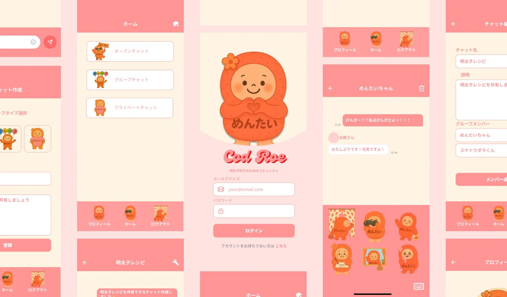
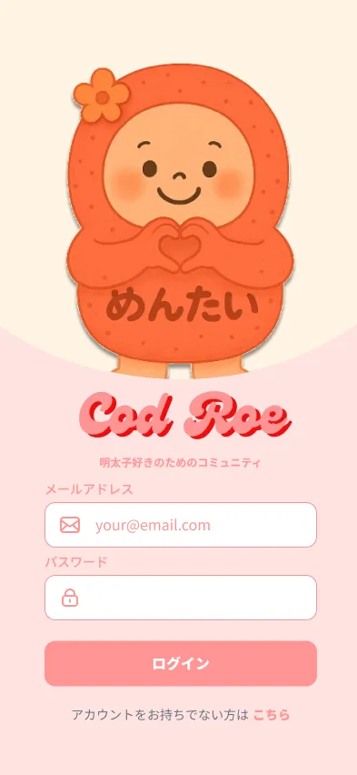
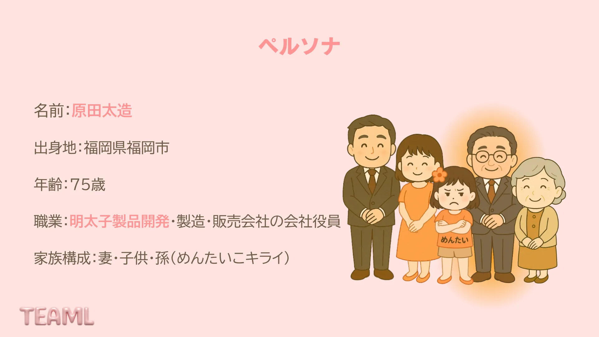
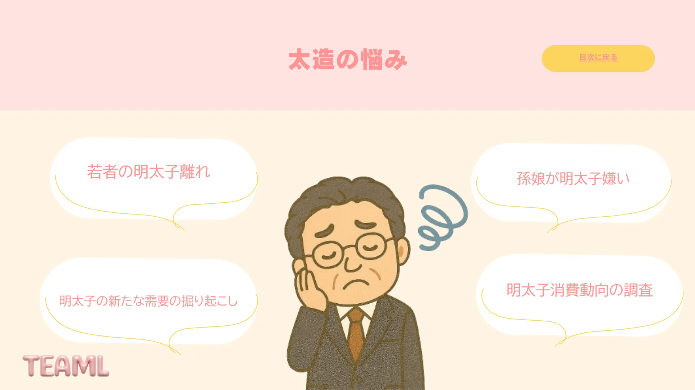
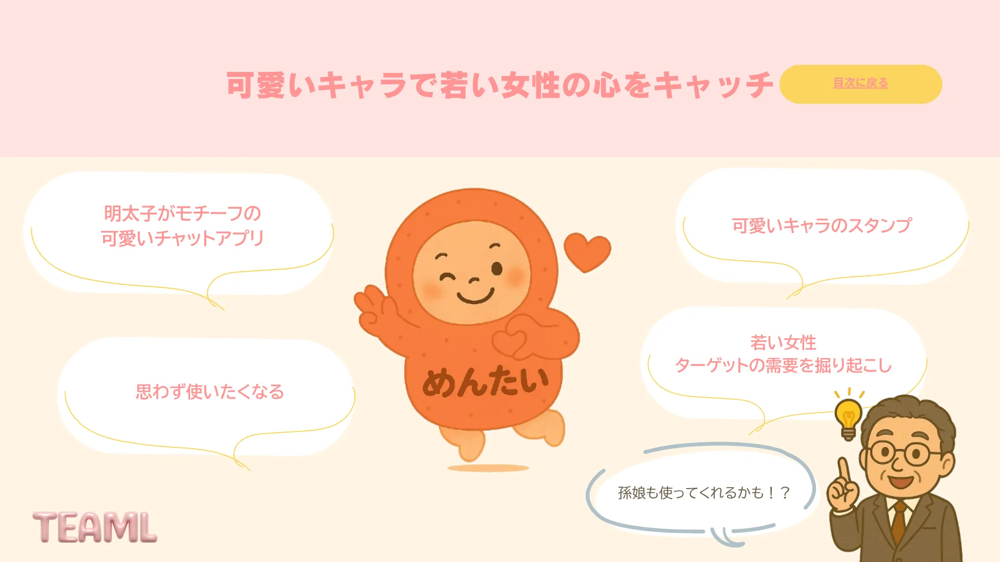
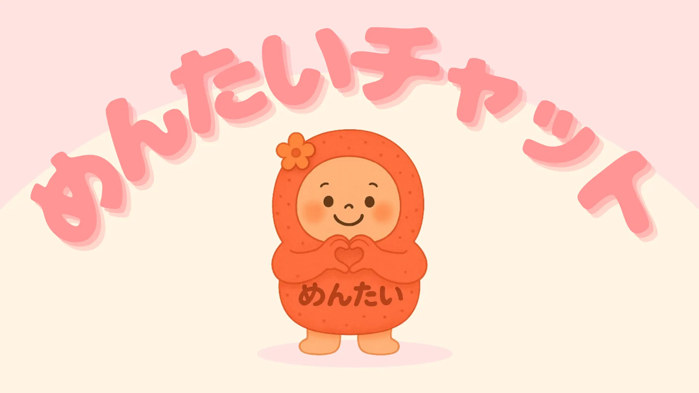
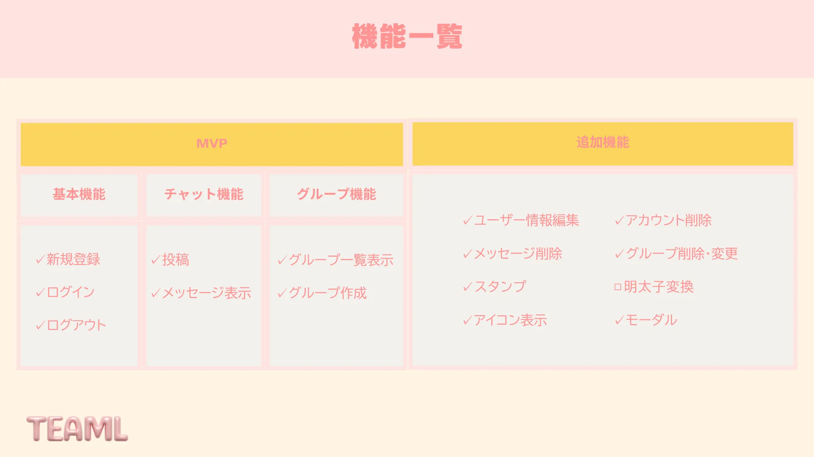
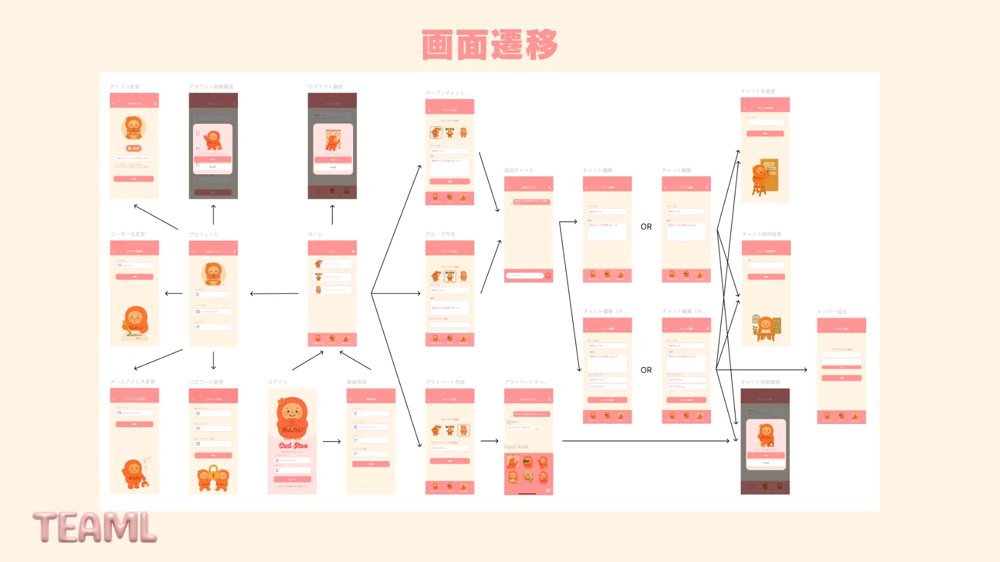
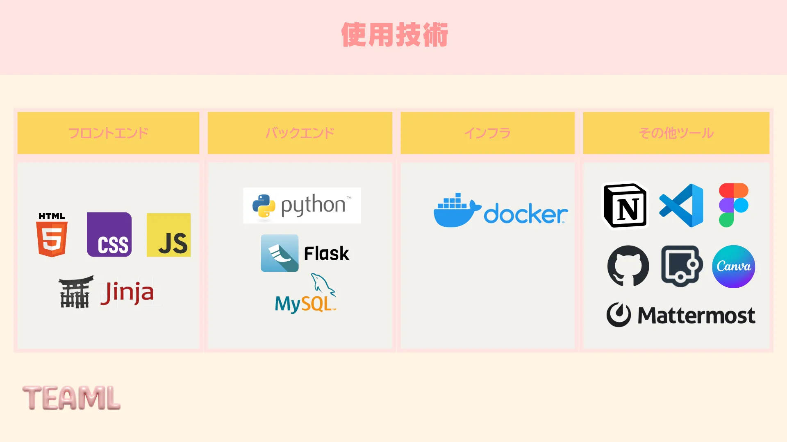
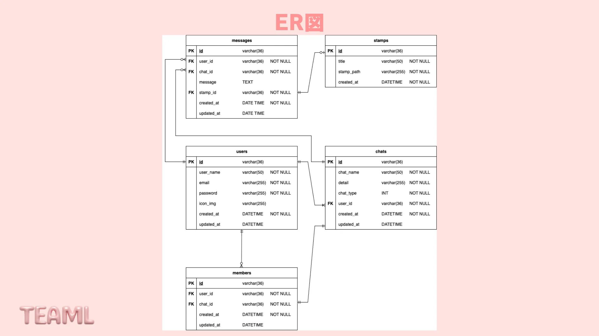

なんでめんたい？
初めてのハッカソン。誰のために何を作るのか、チームで雑談を重ねて課題を掘り下げ、明太子離れに悩む75歳の役員というペルソナに到達。可愛いキャラで若い世代に届けるという方向性を定めました。
チャットアプリというテーマが決まっていたから、進めやすかった？
静止画のデザインだけでは、どのボタンがどこへ行くのか解釈が人それぞれでした。そこでFigmaのプロトタイプで画面をつなぎ、実際にタップできる状態に。動かして見せることで認識のズレを解消しました。
チーム開発で、失敗したことはあった？
1週間commitせず、stashの理解も浅いまま変更を退避。名前も付けず、どれが自分の作業か分からなくなりました。『もう戻せない』と言われ肝を冷やした失敗から、こまめな管理の大切さを痛感しました。
（listに残ってました）
はじめてのハッカソンしてみてどう？
VS Codeの操作から調べていた初めてのハッカソン。先に可視化して認識をそろえること、デザインの意図を実装で再現すること。ここで得た二つの軸が、今の私の開発スタイルの原点になっています。


デザインで気をつけたことは？
感覚で色を選んでいいのか迷いました。だから配色サイトを使い、キャラクター『めんたい』の色を起点に全体の配色ルールを統一。主要画面から逆算して枝を広げ、25画面以上の遷移図を組み上げました。
初めての実装で、つまずいたことは？
一番苦戦したのは最初のCSSです。Figmaでは綺麗でも、flexboxや親子要素の理解が浅く思い通りに配置できません。基礎を学び直し、ブラウザとFigmaの差を一つずつ詰めて実装を形にしていきました。
結果はどうだった？
7チーム中1位。直感的なUI/UXとプロダクトの一貫性が評価されました。キャラの色を起点に世界観を統一した設計が実を結び、デザインと実装はつながっているという学びが自信になりました。







